Fichas de Cultura general – 7.º grado (1.º de ESO)
53 recursos de Cultura general para 7.º grado (1.º de ESO), listos para imprimir: Circo, Tejido, Schiffe versenken, Zelt y más. Cada ficha muestra el nivel, el número de páginas y una vista previa, y enlaza directamente al producto en TpT.
53 recursos

Circo – Ficha de lectura: texto con huecos, comprensión auditiva y sopa de letras

Tejido – Ficha de lectura: texto con huecos, comprensión auditiva y sopa de letras

Schiffe versenken – Ficha de lectura: texto con huecos, comprensión auditiva y sopa de letras

Zelt – Ficha de lectura: texto con huecos, comprensión auditiva y sopa de letras

Zeit – Ficha de lectura: texto con huecos, comprensión auditiva y sopa de letras

Wilhelm der Eroberer – Ficha de lectura: texto con huecos, comprensión auditiva y sopa de letras

Toleranz – Ficha de lectura: texto con huecos, comprensión auditiva y sopa de letras

Strand – Ficha de lectura: texto con huecos, comprensión auditiva y sopa de letras

Voluntariado – Ficha de lectura: texto con huecos, comprensión auditiva y sopa de letras

Misisipi – Ficha de lectura: texto con huecos, comprensión auditiva y sopa de letras

Silesia – Ficha de lectura: texto con huecos, comprensión auditiva y sopa de letras

Job – Ficha de lectura: texto con huecos, comprensión auditiva y sopa de letras

Integración – Ficha de lectura: texto con huecos, comprensión auditiva y sopa de letras

Restaurante – Ficha de lectura: texto con huecos, comprensión auditiva y sopa de letras

Color – Ficha de lectura: texto con huecos, comprensión auditiva y sopa de letras

Pippi Långstrump – Ficha de lectura: texto con huecos, comprensión auditiva y sopa de letras

Max y Moritz – Ficha de lectura: texto con huecos, comprensión auditiva y sopa de letras

Kiwi – Ficha de lectura: texto con huecos, comprensión auditiva y sopa de letras
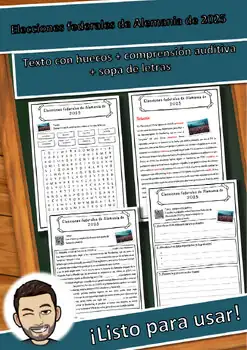
Elecciones federales de Alemania de 2025 – Ficha de lectura: texto con huecos, comprensión auditiva y sopa de letras
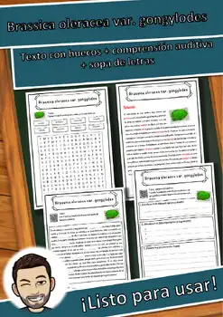
Brassica oleracea var. gongylodes – Ficha de lectura: texto con huecos, comprensión auditiva y sopa de letras
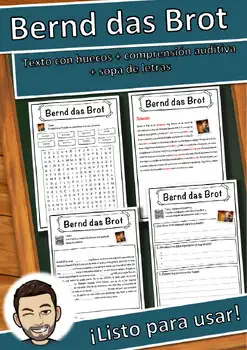
Bernd das Brot – Ficha de lectura: texto con huecos, comprensión auditiva y sopa de letras
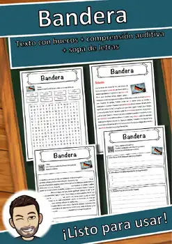
Bandera – Ficha de lectura: texto con huecos, comprensión auditiva y sopa de letras
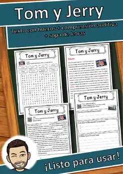
Tom y Jerry – Ficha de lectura: texto con huecos, comprensión auditiva y sopa de letras
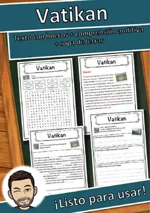
Vaticano – Ficha de lectura: texto con huecos, comprensión auditiva y sopa de letras
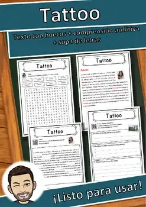
Tatuaje – Ficha de lectura: texto con huecos, comprensión auditiva y sopa de letras
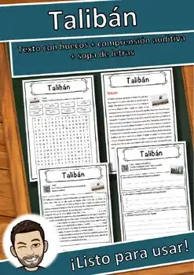
Talibán – Ficha de lectura: texto con huecos, comprensión auditiva y sopa de letras
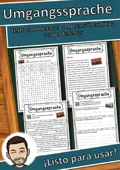
Lenguaje coloquial – Ficha de lectura: texto con huecos, comprensión auditiva y sopa de letras
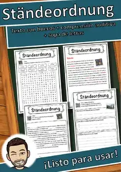
Sociedad estamental – Ficha de lectura: texto con huecos, comprensión auditiva y sopa de letras
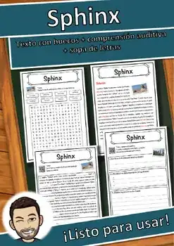
Esfinge – Ficha de lectura: texto con huecos, comprensión auditiva y sopa de letras
Pájaros cantores – Ficha de lectura: texto con huecos, comprensión auditiva y sopa de letras
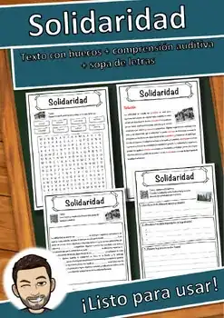
Solidaridad – Ficha de lectura: texto con huecos, comprensión auditiva y sopa de letras
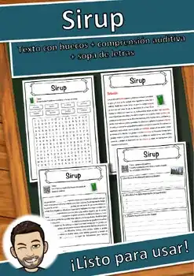
Sirope – Ficha de lectura: texto con huecos, comprensión auditiva y sopa de letras
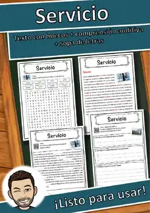
Servicio – Ficha de lectura: texto con huecos, comprensión auditiva y sopa de letras
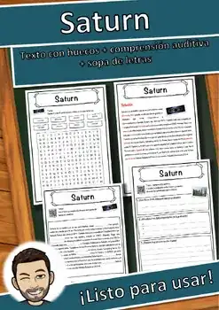
Saturno – Ficha de lectura: texto con huecos, comprensión auditiva y sopa de letras
Caballeros – Ficha de lectura: texto con huecos, comprensión auditiva y sopa de letras
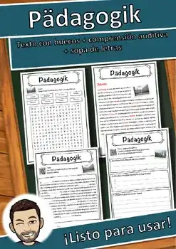
Pedagogía – Ficha de lectura: texto con huecos, comprensión auditiva y sopa de letras
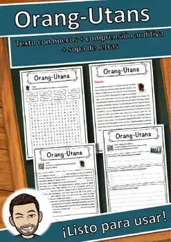
Orangutanes – Ficha de lectura: texto con huecos, comprensión auditiva y sopa de letras
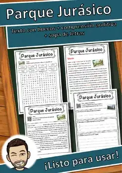
Parque Jurásico – Ficha de lectura: texto con huecos, comprensión auditiva y sopa de letras
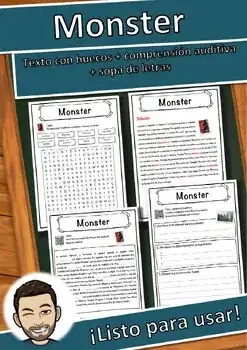
Monstruo – Ficha de lectura: texto con huecos, comprensión auditiva y sopa de letras
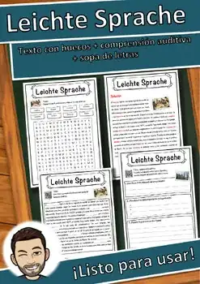
Lectura fácil – Ficha de lectura: texto con huecos, comprensión auditiva y sopa de letras
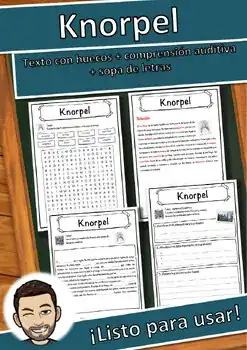
Cartílago – Ficha de lectura: texto con huecos, comprensión auditiva y sopa de letras
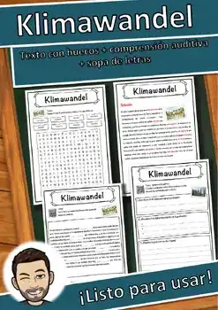
Cambio climático – Ficha de lectura: texto con huecos, comprensión auditiva y sopa de letras
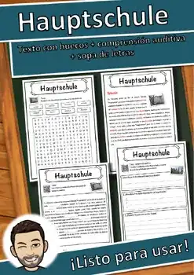
Escuela secundaria básica – Ficha de lectura: texto con huecos, comprensión auditiva y sopa de letras
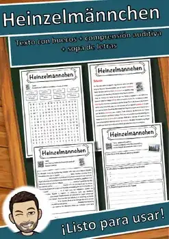
Duendes de Colonia – Ficha de lectura: texto con huecos, comprensión auditiva y sopa de letras
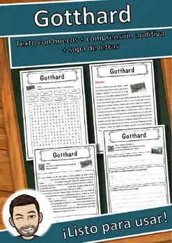
San Gotardo – Ficha de lectura: texto con huecos, comprensión auditiva y sopa de letras
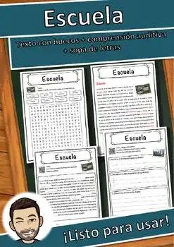
Escuela – Ficha de lectura: texto con huecos, comprensión auditiva y sopa de letras
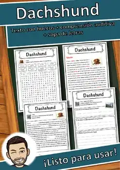
Perro salchicha – Ficha de lectura: texto con huecos, comprensión auditiva y sopa de letras
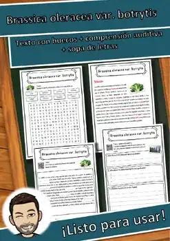
Brassica oleracea var. botrytis – Ficha de lectura: texto con huecos, comprensión auditiva y sopa de letras
No se encontraron recursos. Prueba con otra palabra o con otro filtro.